Jungle canopy
X 2200.5 Y 115 Z 8.5 · yaw 90° pitch 12°

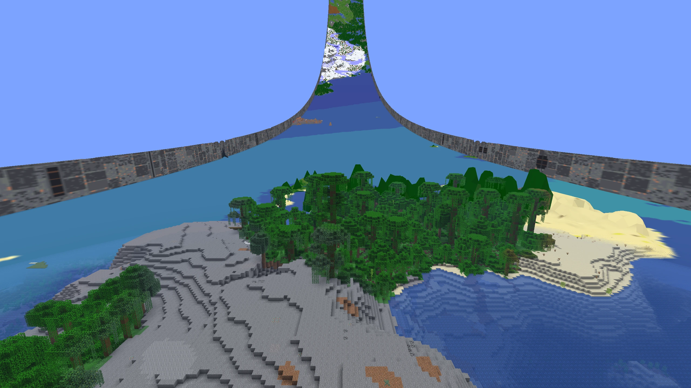

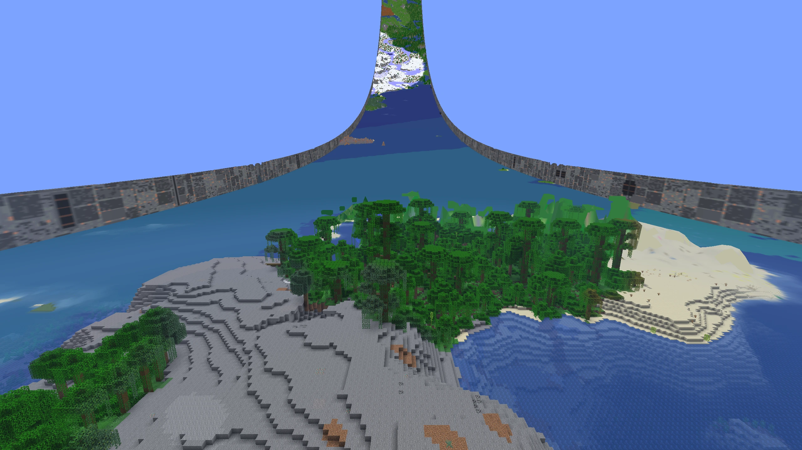
Spruce forest
X 7080.5 Y 108 Z 0.5 · yaw 90° pitch 12°

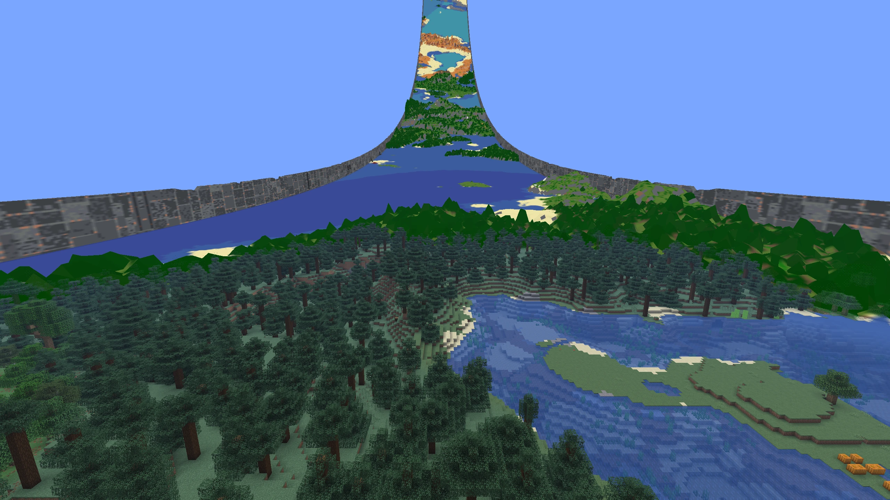

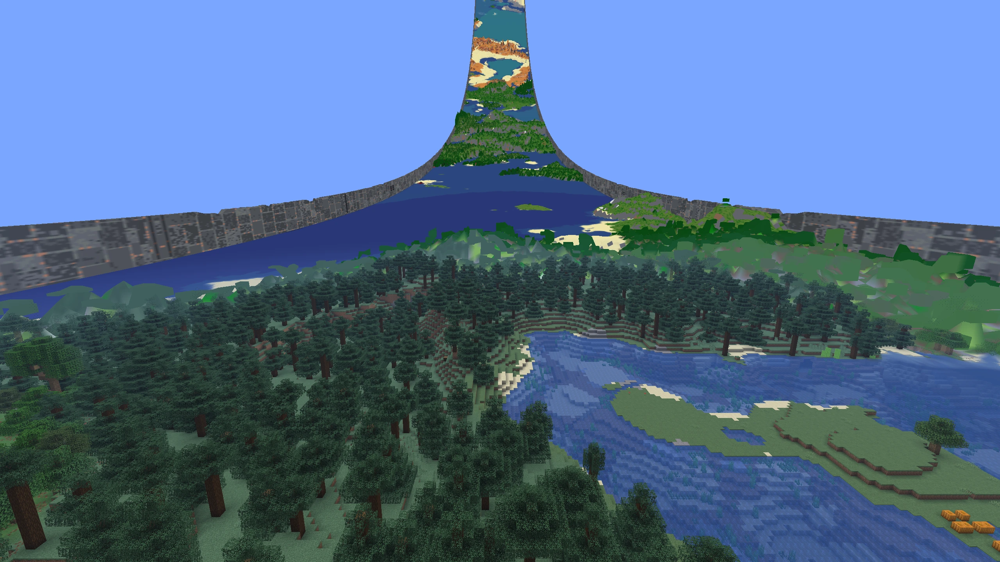
Deep-water bay
X 3361.5 Y 109 Z -27.5 · yaw -100° pitch 18°

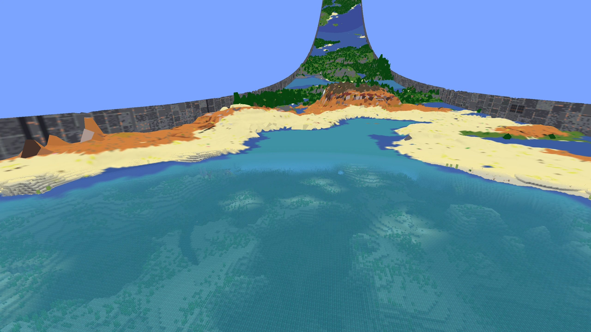

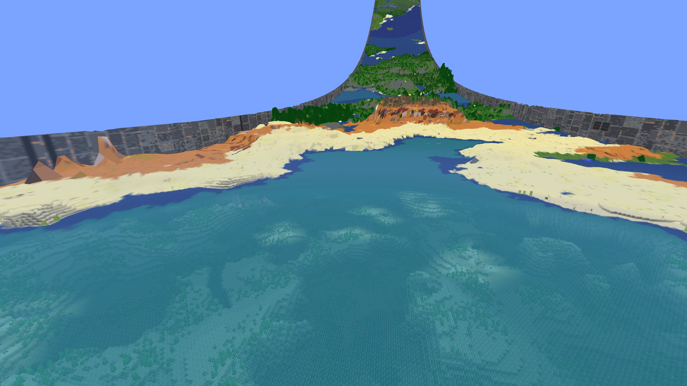
Shallow reef
X 2708.5 Y 137 Z 25.5 · yaw 164° pitch 33°

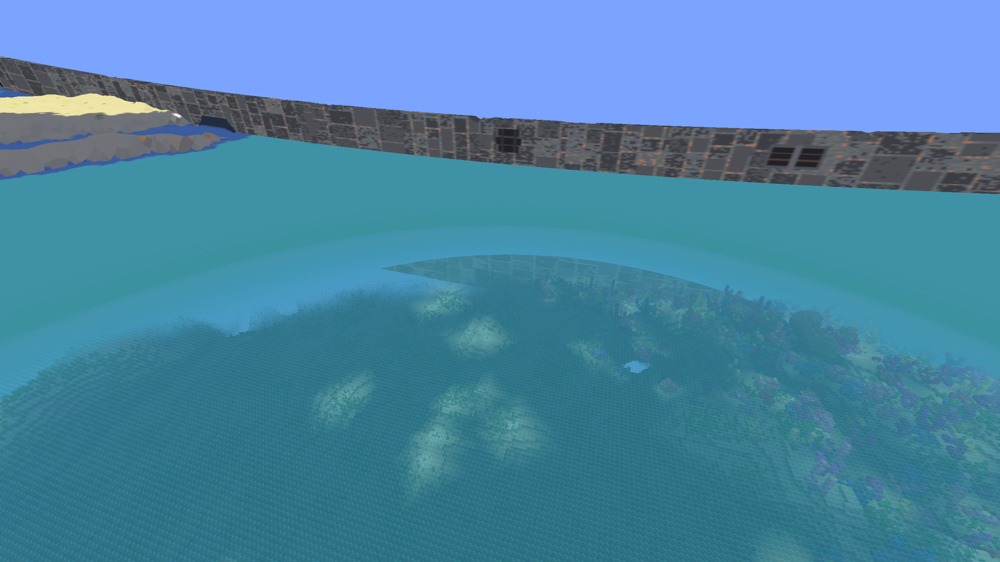

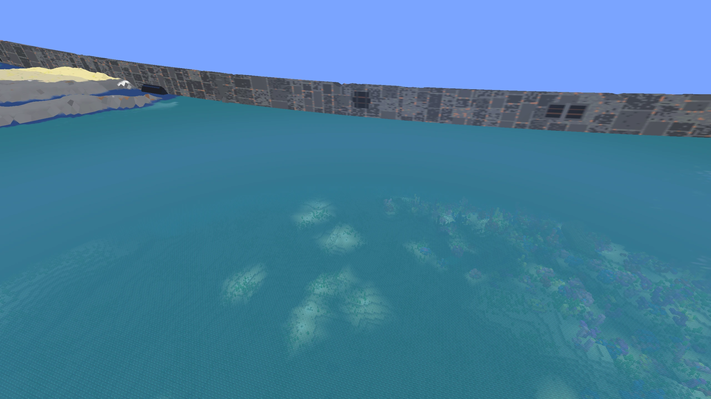
Across the wrap seam
X 32760.5 Y 150 Z -79.5 · yaw -90° pitch 10°

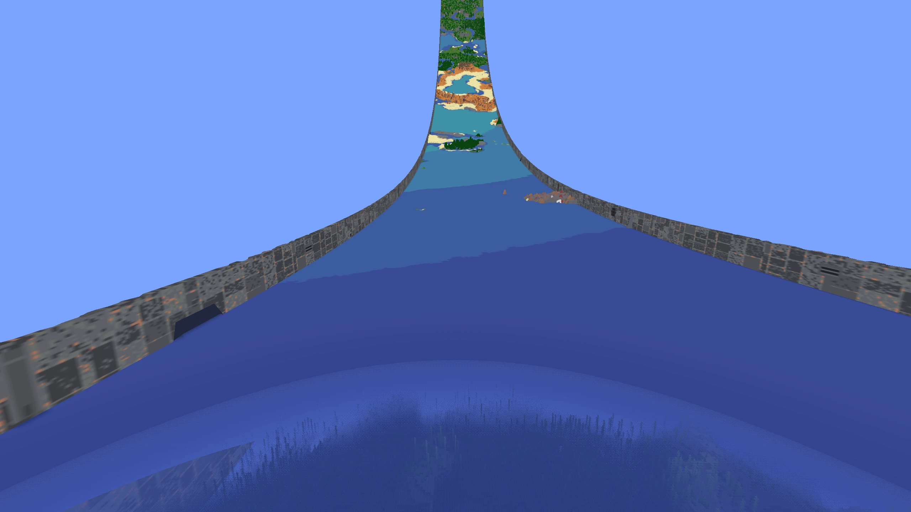

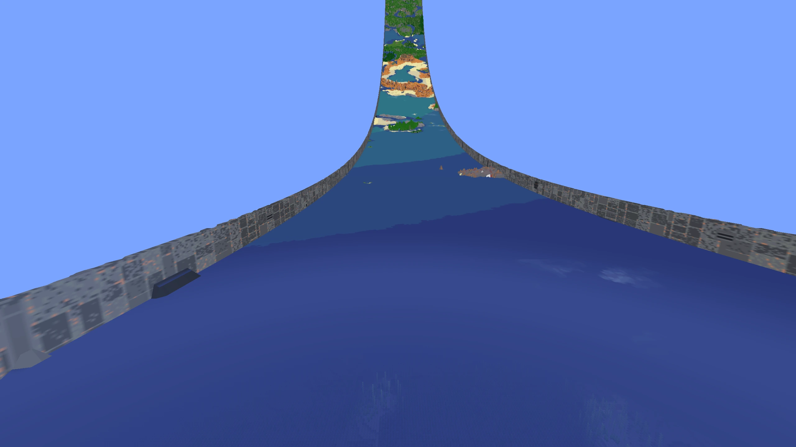
Above the outer rim
X 4200.5 Y 215 Z 230.5 · yaw 142° pitch 25°

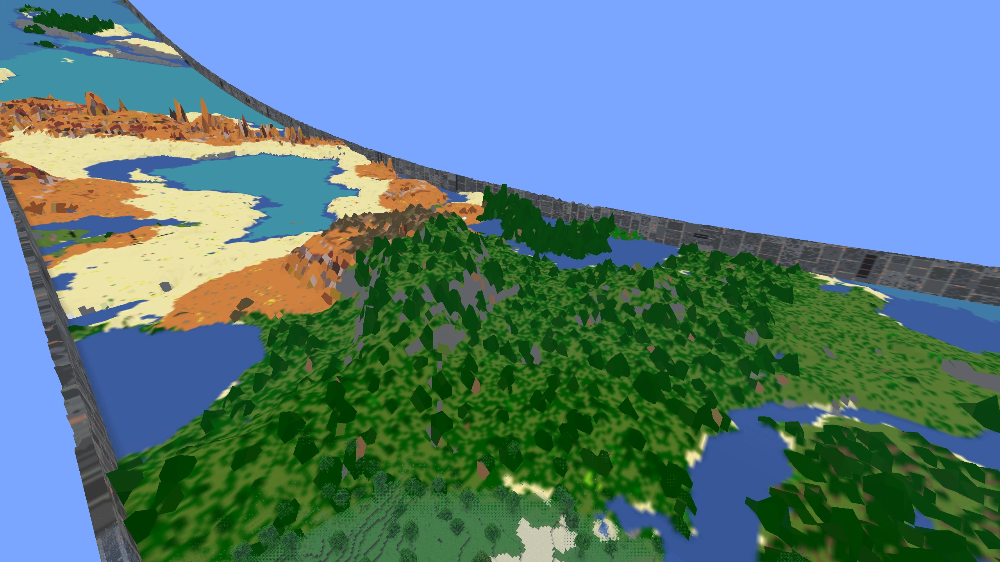

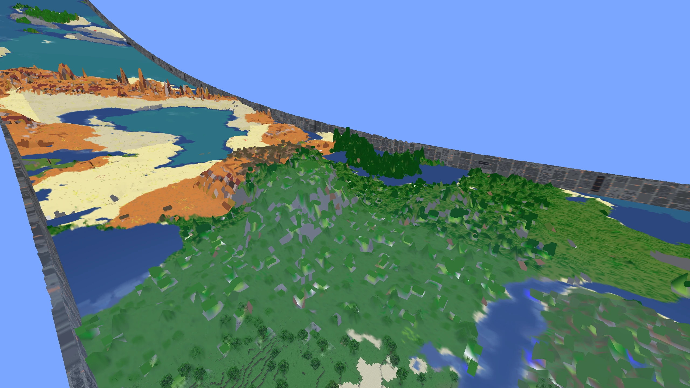
Looking up the far arc
X 14000.5 Y 160 Z -179.5 · yaw -105° pitch -12°

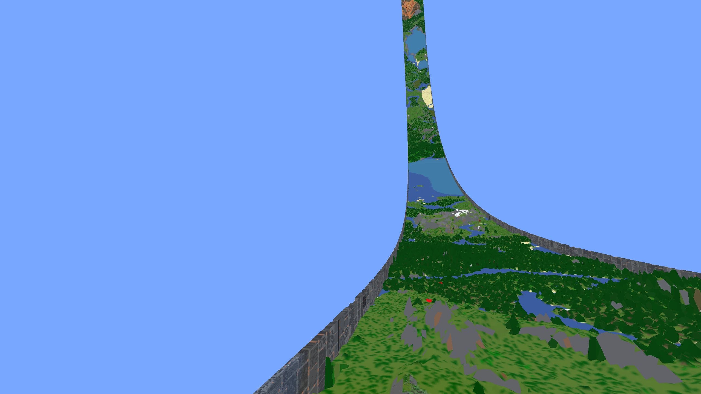

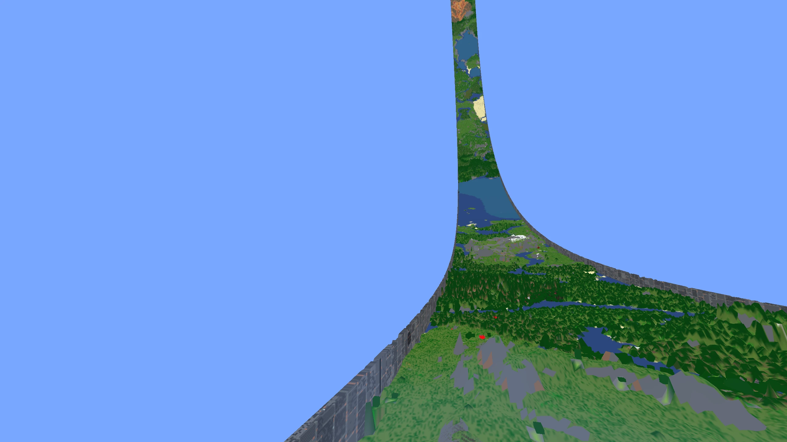